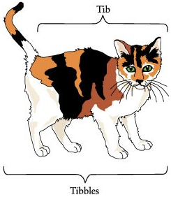
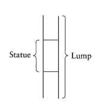
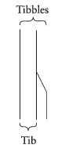
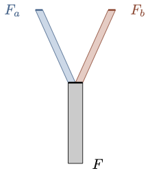

11 The Puzzles of Coincidence
The problem of change calls for an answer to the question of how can one and the same object exemplify incompatible qualities? The puzzles of coincidence are motivated by an orthogonal question: how can two objects share their matter and spatial location, and yet remain numerically distinct? They put pressure on a certain view of material objects as completely individuated by their matter.
For (Sider 2003), the puzzles of coincidence provide the basis of a powerful case for at least one variant of perdurantism, which he calls the worm view. This is, briefly, an account on which material objects are identified with their spatiotemporal path.
The worm theory’s appealing account of coincidence is one of its most attractive features. Instead of providing a way to resist coincidence, the worm theorist gives an explanation of how coincidence is possible, and indeed, unobjectionable. Whenever distinct material objects coincide, they are never at that time wholly present, but rather overlap in a shared temporal slice or segment. Coincident objects are therefore no more mysterious or objectionable than overlapping roads.
He makes a distinction between different cases of coincidence.
11.1 The Statue and the Clay
A sculptor creates a statue, which we may call Goliath, from a lump of clay, which we may call Lumpl, at noon. The lump of clay had been in the sculptor’s studio for days before she decided to mold it into a statue. We now argue that Goliath and Lumpl are two numerically different material objects, which share the same spatial location and the same matter immediately after the statue has been created:
- Lumpl existed before noon.
- Goliath did not exist before noon.
- Therefore, Goliath is numerically different from Lumpl.
This appears to conflict with the platitude that no two numerically different material objects can share the same spatial location and the same matter.
11.2 Tibbles the Cat
We begin with a cat, Tibbles, and a proper part, Tib, which consists of all of Tibbles except for the tail. Here is Fig. 5.1 from (Sider 2003):

Here is a case for coincidence. Suppose that Tibbles loses its tail at 1:30pm. On the one hand, we may argue that Tibbles is numerically different from Tib on the grounds that something is true of one that is not true of the other, e.g., Tibbles exactly occupies a certain space region \(R\) at 1pm, which Tib does not exactly occupy.
- Tibbles exactly occupies at 1pm a space region, which Tib does not exactly occupy.
- Therefore, Tibbles is different from Tib.
But after the detachment, it seems like Tibbles and Tib become coincident objects:
- Tibbles and Tib share the same spatial location at 2pm, and, moreover, they share the same matter.
11.3 Fission
A flatworm is able to survive severe tissue damage, and, in fact, a flatworm is able to survive a division into two separate organisms that might then take different ways, never to meet again or to have significant interaction with each other. Consider a case of fission for a flatworm at noon. What used to be one organism before noon, which we may call F, turns after division into two different organisms Fa and Fb. The case for coincidence is more subtle.
First, one argues that F is numerically different from Fa and Fb, respectively.
- Fa is numerically different from Fb.
- F is numerically identical to Fa if, and only if, F is numerically identical to Fb.
- If Fa is numerically identical to F, and F is numerically identical to Fb, then Fa is numerically identical with Fb.
- Therefore, F is neither numerically identical to Fa nor numerically identical with Fb.
The justification from 3 comes from the transitivity of numerical identity. So, if F could be numerically identical to both Fa and Fb, then Fa would have to be numerically identical to Fb, which contradicts the very first premise.
The perdurantist is keen to describe this as a case of coincidence, since they think that both Fa and Fb existed well before separation.
- Fa existed before fission, and up until noon, Fa shared the same spatial location and matter with F (and Fb).
- Fb existed before fission, and up until noon, Fb shared the same spatial location and matter with F (and Fa).
So, prior to noon, and despite appearances to the contrary, we had at least three different but coincident flatworms before us: F, Fa, and Fb.
11.4 Ship of Theseus
The Ship of Theseus provides another case for coincidence. Here is how (Sider 2003) puts the puzzle:
Imagine replacing The Ship of Theseus’s planks one by one until all the original planks are gone, and christen the final ship ‘Replacement’. Since replacement of a single plank does not destroy a ship, we obtain a series of true identity statements… By the principle of the transitivity of identity …, The Ship of Theseus = Replacement. … But now imagine that each plank removed during this process was saved in a warehouse. After enough planks accumulated, we began assembling them into a new ship. … We now face a difficult question: which ship is the same ship as the original Ship of Theseus? We argued via the transitivity of identity that Replacement is The Ship of Theseus; but Planks also has a powerful claim since it contains all the original planks. Surely a ship could be transported over land by disassembly and subsequent reassembly; the case of The Ship of Theseus and Planks seems parallel.
Replacement and Planks are, on the face of it, two numerically distinct ships, but each of them has a claim to being the Ship of Theseus. Furthermore, they all seem to coincide before any planks are replaced in the original ship.
11.5 Four-dimensionalism and Coincidence
The worm view of material objects takes them to be four-dimensional objects with a spatiotemporal path. Not only do they have temporal parts, they include other four-dimensional objects as parts. This provides the worm theorist with some resources to describe cases of coincidence as cases in which two material objects share temporal parts in much the same way in which two roads are able to share a stretch of road.
11.5.1 The Statue and the Clay
This is a case in which Goliath and Lumpl share temporal parts at all times at which the statue exists. We may suppose that Lumpl existed before noon, which is when the sculptor molded the lump of clay into a statue, and will continue to exist after the statue is eventually squashed. Notice that Lumpl will survive being squashed, which means that in the situation at hand, Goliath is a proper four-dimensional part of Lumpl. Here is how (Sider 2003) depicts the situation:

11.5.2 Tibbles and Tib
The perdurantist will give a similar redescription of Tibbles and Tib. Tibbles and Tib are two numerically distinct four-dimensional objects, which share temporal parts as soon as Tibbles loses its tail at 1:30pm. Neither Tib nor Tibbles is a four-dimensional part of the other, but they have a common four-dimensional proper part from 1:30pm until the end of Tibbles. Here is the diagram (Sider 2003) provides:

11.5.3 Fission
The worm theorist is in a position to offer an elegant redescription of fission. The \(Y\)-shaped diagram includes at least three four-dimensional objects, \(F_a\), \(F_b\), and \(F\). \(F\) is represented by the grey stem in the diagram, which is itself a four-dimensional proper part of each \(F_a\) and \(F_b\). Both of these are four-dimensional objects, which consist of a shared four-dimensional part and a blue and a red four-dimensional part, respectively. This is indeed completely parallel to the case of two roads, which happen to share a common stretch of road.

11.5.4 Ship of Theseus
The perdurantist may want to make a distinction between two numerically different four-dimensional objects involved in the Ship of Theseus scenario:
There is a four-dimensional object which coincides with the Ship of Theseus early on and ends in Planks. Some of its temporal parts are highly scattered sums of planks, which used to be part of the Ship of Theseus.
There is a four-dimensional object which coincides with the Ship of Theseus early on and ends in Replacement. All of its temporal parts have the shape of a ship at different stages of repair.
To be sure, Replacement is numerically distinct from Planks, but each has a claim to being numerically identical to the Ship of Theseus. The perdurantist would describe this as a case of coincidence, since both Replacement and Planks share some temporal parts early on in their careers. The question remains: which one is the Ship of Theseus?
Overall, then, four-dimensionalism offers a unified approach to the puzzles of coincidence, which, for (Sider 2003), constitutes a powerful argument for the view.